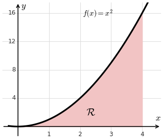
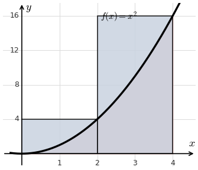
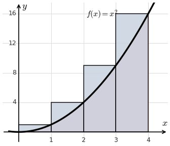
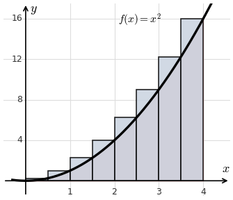

Lesson 20: Sigma Notation and the Area Problem
We use \(\sum\) to indicate a sum.
Calculate \(\displaystyle\sum_{k=0}^{4} k^2\).
Calculate \(\displaystyle\sum_{k=2}^{6} k^3\).
An Important Formula
Calculate \(\displaystyle\sum_{k=1}^{30} k^2\).
Let \(\mathcal{R}\) be the region between the graph of \(f(x) = x^2\) and the \(x\)-axis over \(0 \le x \le 4\). What is its area?
There is no formula from geometry for this shape. So we approximate it with rectangles, and see that the approximation improves as the number of rectangles grows.

Approximate the area using two right-hand rectangles.
Each rectangle has width 2. The heights come from the right endpoints, \(x = 2\) and \(x = 4\).

Approximate the area using four right-hand rectangles.

The rectangles overshoot less as there are more of them.

With \(n\) right-hand rectangles, each has width \(\Delta x = \frac{4}{n}\), and the \(k\)th right endpoint is \(x_k = k\,\Delta x\).
| \(n\) | Area |
|---|---|
| 2 | 40 |
| 4 | 30 |
| 8 | 25.5 |
| 1,000,000 | 21.33336… |
As the number of rectangles approaches infinity, we get the exact area.
The Definite Integral
This is named after Bernhard Riemann, another of my favorites. He made a famous conjecture, the Riemann Hypothesis, that is still one of the most important unsolved problems in mathematics. His ideas in geometry were also crucial to Einstein’s theory of gravity.
Think of \(\int\) as a stretched-out S for “sum,” and \(dx\) as the width of infinitely thin rectangles.